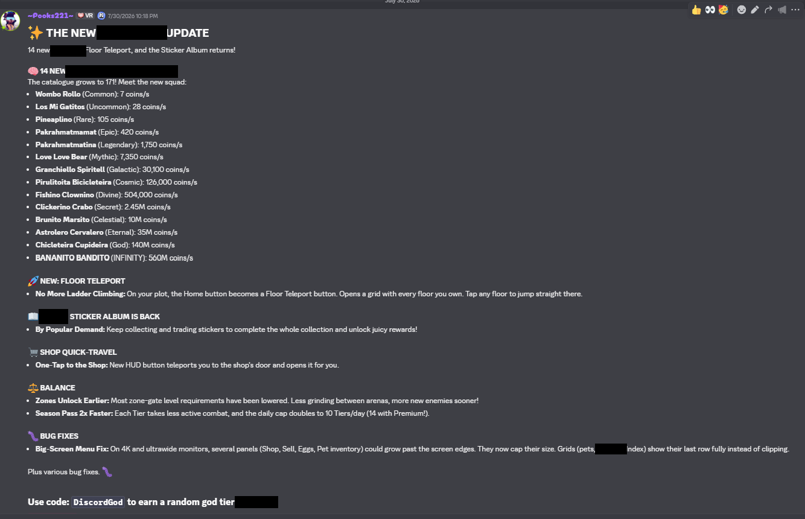

> open personnel file
Ethan
Community & Social Manager. North Wales, Pennsylvania.
- File
- CO-PERS-0001
- Clearance
- Gen Z and Gen Alpha communities
- Field
- Community, social media, video, QA and moderation
- Years active
- 5+
- Status
- Open to new assignments (games, community, social, QA; remote or hybrid)
I run gaming communities for a new generation: big Discord servers, trend-driven short video, live events in VR, and the QA and moderation work that keeps all of it healthy.
5+years in game communities
300K+member Animal Company Discord
15M+Rec Room room visits
400K+views on top TikTok
200K+views on top Short
120%+community growth in one month (Kluge)
Service record
Kluge Interactive
Marketing Specialist, May 2024 to Oct 2026 · QA Tester
- Posted 3+ times a week across the major platforms for the studio's games.
- Wrote go-to-market plans for Roblox and Meta Horizon Worlds titles.
- Ran creator and influencer outreach and paid campaigns.
- Built weekly Metricool reports, analyzed with Claude.
- Built a Roblox-to-Discord retention system that grew a community 120%+ in a month.
- Wrote patch notes for every Roblox title.
- QA testing for VR and flatscreen builds.
Accounts: @heykluge · @klugegameslegacy
Animal Company VR (Wooster Games)
Community Manager, contract, May to Jul 2025
- Managed a Discord of 300,000+ members and restructured its channels.
- Set up incentives for a volunteer moderation team of 15+.
- Live-streamed developer Q&As with OBS, and pioneered a stream using the newly introduced mobile streaming camera.
- Moderated the game's Reddit.
- Ran weekly events, games and adventures, and made TikTok and YouTube Shorts content. Top videos passed 400K views on TikTok and 200K on Shorts.
IconINK Co-Manager (Rec Room contract studio)
Co-Manager, Jul 2021 to May 2024
- Co-ran a contract studio for Rec Room with five clients (the work came through Rec Room).
- Held client meetings and feedback loops.
- Produced the Rec Rocks concert and the AJR virtual ride.
- QA across 10+ contracted projects, including the AJR crash fix (Quest, iOS, Android, Unity URP).
- Led two teams of 10 volunteer moderators across time zones, with triage protocols.
- Ran the studio's social channels and website.
Rec Room rooms and events
5 to 6 years
- Ran some of Rec Room's top social hangout spaces, with 15M+ collective room visits.
- Hosted live trivia with real-time audience interaction, up to 300 players at once, and promoted the experiences I built.
- Managed the community's social content, Discord and volunteer moderators.
Selected social media work
- The Beauty of Animal Company
@animalcompanyvr~200K views - I Like Big Butts
@animalcompanyvr~100K views - Just a lil guy
@animalcompanyvrviews: TBC - Rock Your Body
@animalcompanyvrviews: TBC
Personal channel: @pooks221, with clips around 95K and 30K views.
Writing and community systems
Redacted samples (client, game and server names removed).


